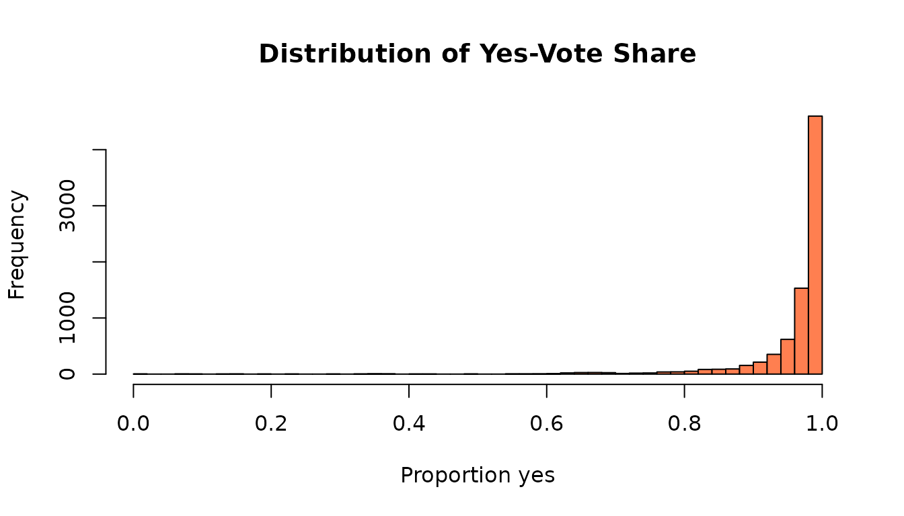

Install and load
install.packages("assemblykor")
library(assemblykor)
#>
#> ┌───────────────────────────────────────────────────────────────┐
#> │ assemblykor 0.1.2 │
#> │ Korean National Assembly Data for Political Science Education │
#> └───────────────────────────────────────────────────────────────┘
#>
#> 7 built-in datasets:
#> legislators 947 recs MPs (20-22nd)
#> bills 60,925 recs Bills proposed
#> wealth 2,928 recs Asset declarations
#> seminars 5,962 recs Policy seminars
#> speeches 15,843 recs Committee speeches (22nd, Sci & ICT)
#> votes 8,050 recs Plenary vote tallies
#> roll_calls 383,739 recs Member-level votes (22nd)
#>
#> Downloadable:
#> get_bill_texts() Bill propose-reason texts
#> get_proposers() Co-sponsorship records
#>
#> Tutorials:
#> list_tutorials() See all 9 tutorials
#> run_tutorial(1) Launch in browser (interactive)
#> open_tutorial(1) Copy Rmd to working directory
#>
#> Korean font for ggplot2: set_ko_font()
#>
#> https://CRAN.R-project.org/package=assemblykorSeven datasets, one line each
# All datasets load lazily - just call their name
head(legislators, 3)
#> member_id assembly name name_hanja name_eng party party_elected
#> 1 XQ98168F 20 강길부 姜吉夫 KANG GHILBOO 무소속 무소속
#> 2 60490713 20 강병원 姜炳遠 KANG BYUNGWON 더불어민주당 더불어민주당
#> 3 IH436704 20 강석진 姜錫振 KANG SEOGJIN 자유한국당 새누리당
#> district district_type
#> 1 울산 울주군 constituency
#> 2 서울 은평구을 constituency
#> 3 경남 산청군함양군거창군합천군 constituency
#> committees
#> 1 산업통상자원중소벤처기업위원회, 4차 산업혁명 특별위원회, 예산결산특별위원회, 교육문화체육관광위원회
#> 2
#> 3 농림축산식품해양수산위원회, 국회운영위원회, 보건복지위원회, 예산결산특별위원회
#> gender birth_date seniority n_bills n_bills_lead
#> 1 M 1942-06-05 4 312 21
#> 2 M 1971-07-09 2 1078 94
#> 3 M 1959-12-07 1 694 53
head(bills, 3)
#> bill_id bill_no assembly
#> 1 PRC_K2F0C0Y5B2D2C1Z5B2F6T4S2K9N8V8 2024996 20
#> 2 PRC_R2A0X0T5I2I2R1I4B5A6P3G2S7W8P0 2024995 20
#> 3 PRC_Z2T0H0A5G1H8J1M0Q4W4S0F4E6G6Y4 2024933 20
#> bill_name committee
#> 1 집합건물의 소유 및 관리에 관한 법률 일부개정법률안 법제사법위원회
#> 2 지방세법 일부개정법률안 행정안전위원회
#> 3 상장회사법안 정무위원회
#> propose_date result proposer proposer_id
#> 1 2020-05-22 임기만료폐기 김병관 QB390802
#> 2 2020-05-22 임기만료폐기 김병관 QB390802
#> 3 2020-05-18 임기만료폐기 채이배 GDN7894V
head(wealth, 3)
#> member_id year name total_assets total_debt net_worth real_estate building
#> 1 0135473I 2015 이군현 1856381 304644 1551737 1373000 1373000
#> 2 0135473I 2016 이군현 1807027 330719 1476308 1514998 1514998
#> 3 0135473I 2017 이군현 1855777 321020 1534757 1597000 1597000
#> land deposits stocks n_properties has_seoul_property has_gangnam_property
#> 1 0 160576 64074 5 TRUE TRUE
#> 2 0 141139 24233 5 TRUE TRUE
#> 3 0 154218 41873 5 TRUE TRUEQuick analysis: bill survival rates
bills %>%
count(result, sort = TRUE) %>%
head(5)
#> result n
#> 1 임기만료폐기 30678
#> 2 대안반영폐기 13692
#> 3 <NA> 12171
#> 4 수정가결 2222
#> 5 원안가결 1048Only about 5% of bills pass in their original form.
Quick analysis: wealth inequality
# Net worth in billion KRW
hist(wealth$net_worth / 1e6, breaks = 50, col = "steelblue",
main = "Legislator Net Worth", xlab = "Billion KRW")Quick analysis: voting consensus
votes$yes_rate <- votes$yes / votes$voted
hist(votes$yes_rate, breaks = 40, col = "coral",
main = "Distribution of Yes-Vote Share", xlab = "Proportion yes")
Most bills pass near-unanimously; a handful are fiercely contested.
Tutorials
Nine Korean-language tutorials cover the full methods sequence:
list_tutorials() # See all 9
run_tutorial(1) # Interactive in browser
open_tutorial(1) # Copy Rmd to your directoryNext steps
-
vignette("introduction")for deeper examples -
vignette("codebook")for the full data dictionary -
?legislators,?bills, etc. for variable-level documentation